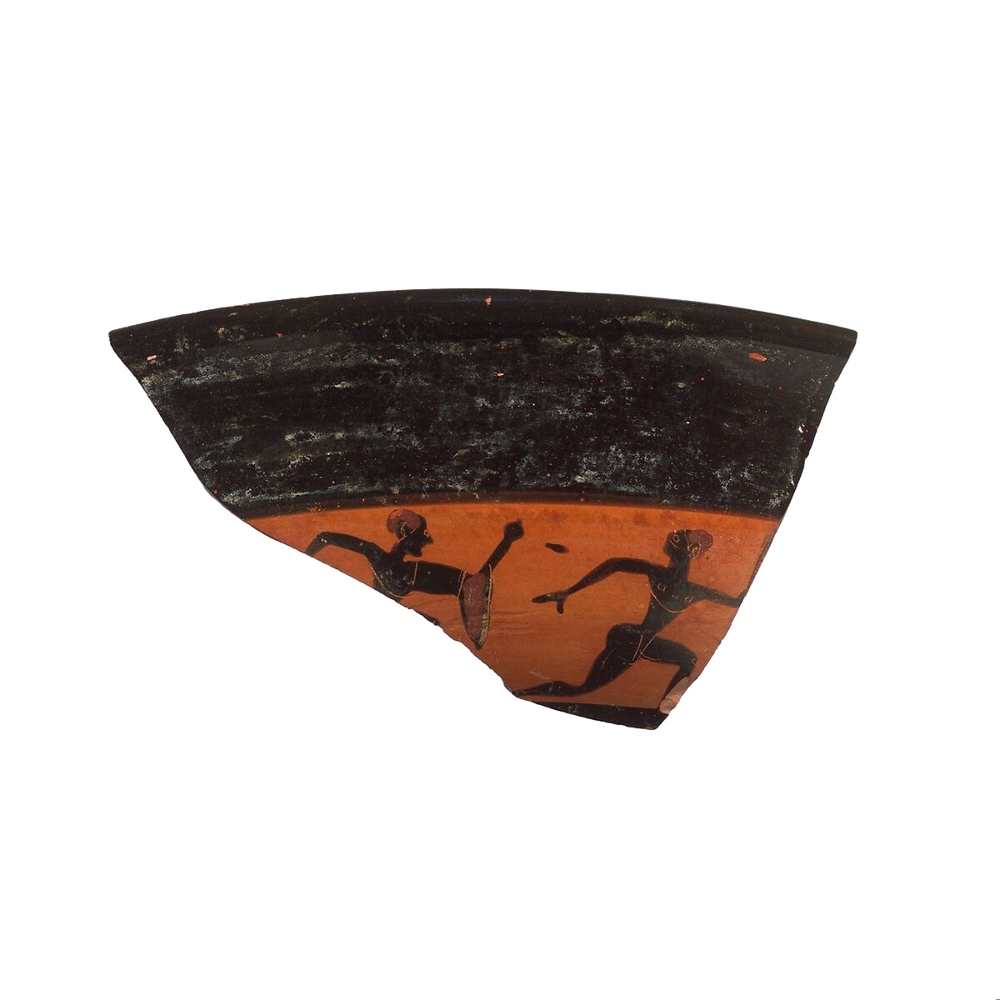
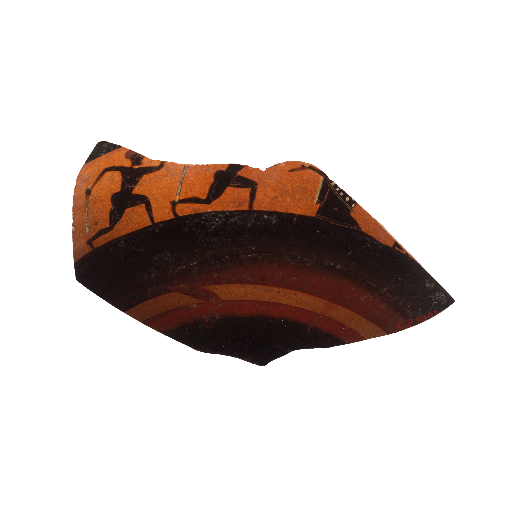

DIONYSIAN
INTERACTIVE

About
Two forces,
one company.
Every act of creation, the old argument goes, is a struggle between two drives: the Apollonian, which wants form, limit, the clean line, and the Dionysian, which wants to dissolve it. Most things worth doing live in the friction between them.
Dionysian Interactive Inc. takes its name from the second drive on purpose, and builds software that answers to the first. Quitlette, our first release, exists entirely in that friction: an appetite, given a boundary. The ecstasy, kept on a leash.